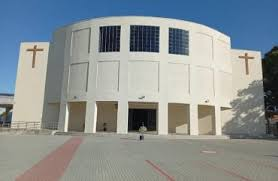

São José dos Campos/SP
Plataforma digital desenvolvida para aproximar a comunidade das atividades paroquiais.

07:00
19:00
07:00 | 09:00 | 19:00
Espaço dedicado à formação cristã de crianças, jovens e adultos, promovendo evangelização, aprendizado da fé e preparação para os sacramentos.
Formação cristã inicial.
Preparação sacramental.
Formação para jovens.